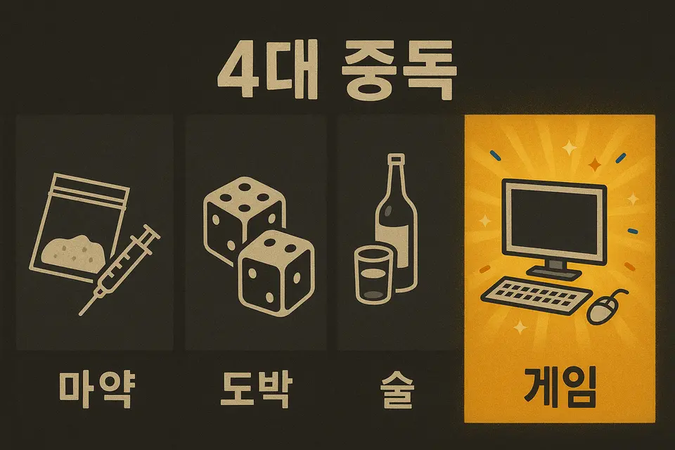
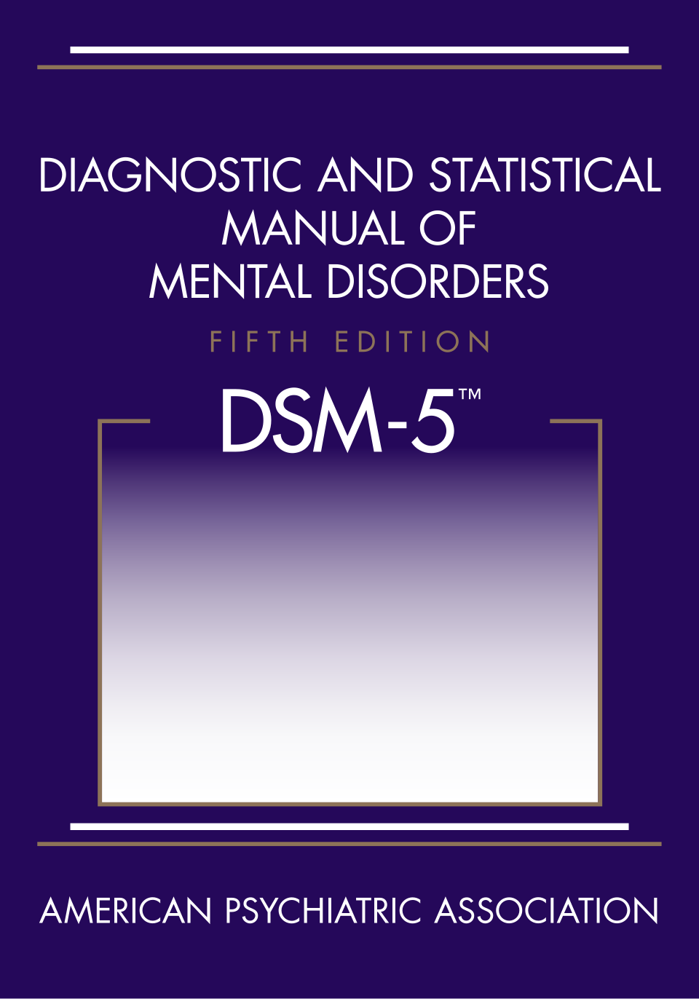
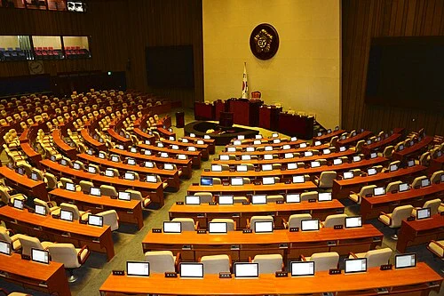
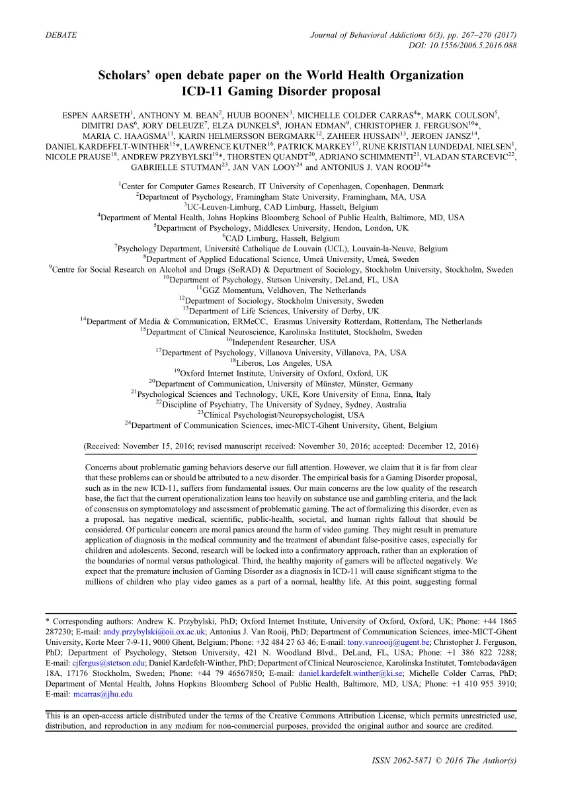
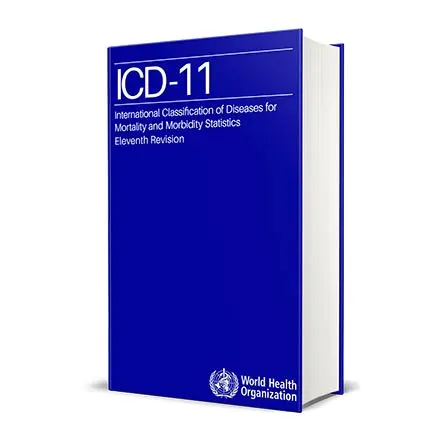
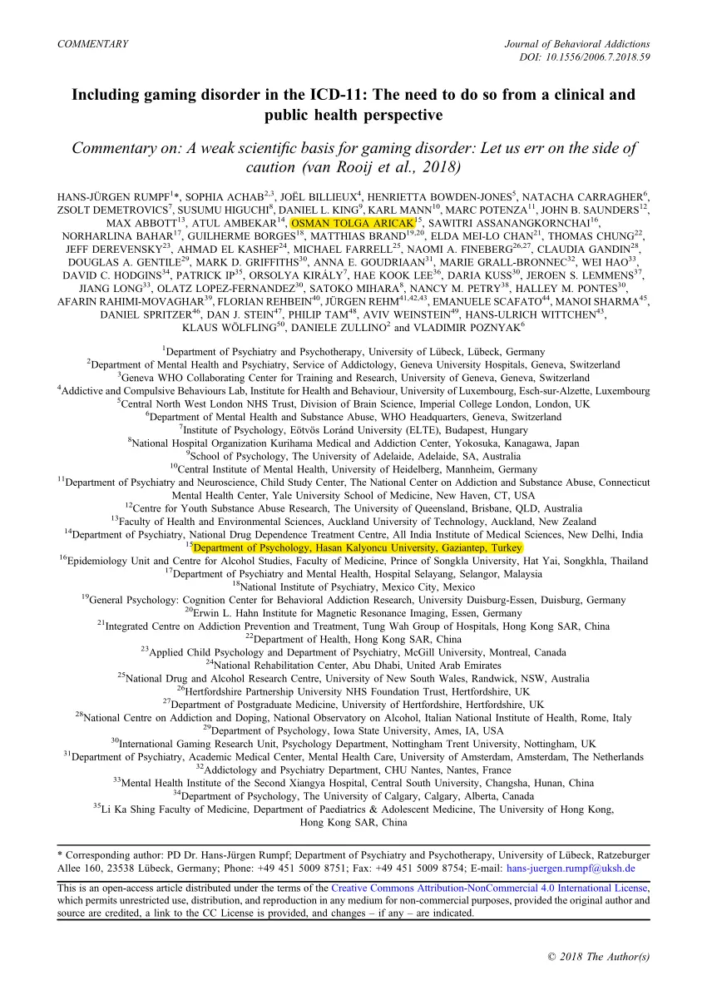
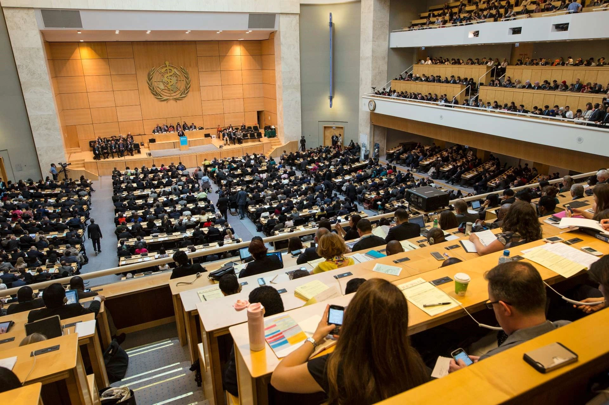
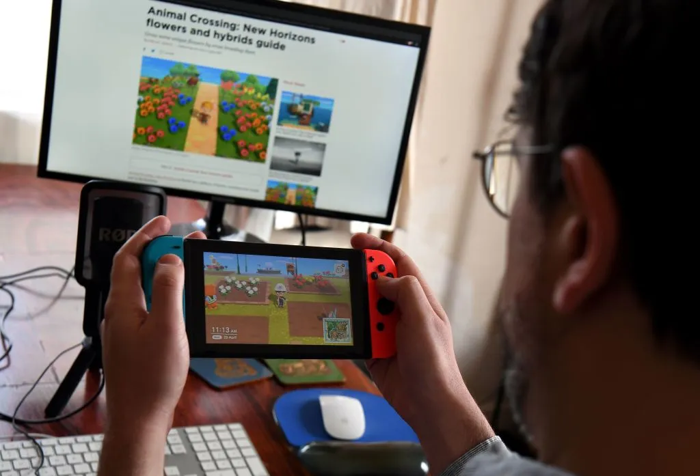
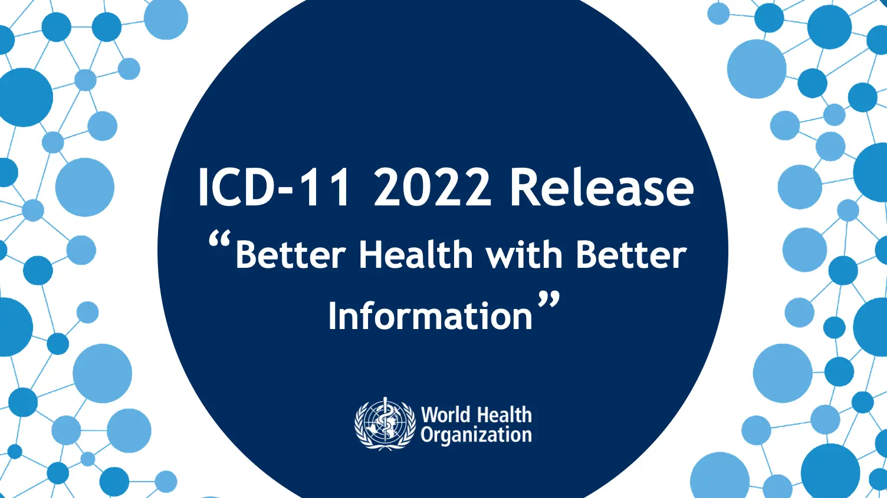
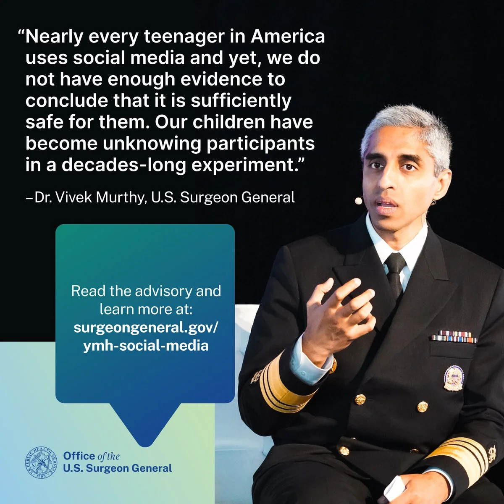

The Supreme Court of the United States ruled that "Video games are protected by the First Amendment and lacks evidence for harm."

2013.04
Four Major Addiction Act
Korean congressman Shin Eui-Jin proposed a bill to classify internet game addiction as a disease along with gambling, drugs, and alcohol.

2013.05
DSM-5 Published
American Psychiatric Association published DSM-5 including "Internet Gaming Disorder" as a condition for further study.

2016.05
Discard of Four Major Addiction Act
Due to the expiration of the 19th National Assembly's term and the opposition from the game industry, the bill was discarded without review.

2017.09
Scholars’ Open Debate Paper WHO ICD-11 Proposal.
Researchers argued that WHO's proposal lacks clear causal links and relies on moral panic rather than scientific evidence.

2017.12
WHO Announced their plan on ICD-11
WHO official, "Planning to list Gaming Disorder in ICD-11" in an official interview.
2018.06
Global Statement
Shortly after WHO released the ICD-11 draft, global game associations such as K-Games, ESA issued a joint statement opposing the inclusion due to lack of scientific evidence.

2018.09
Rebuttal on Open Debate by Rumpf et al.
Proponents argued that strict diagnostic criteria are necessary for public health systems, insurance coverage, and to prevent overdiagnosis.

2019.05
The 72nd WHO General Assembly unanimously agreed on listing Gaming Disorder
The Gaming Disorder is officially listed in ICD-11 with code "6C51".
2019.11
Oxford University Research (Przybylski)
"WHO's diagnostic criteria are subjective and lack transparency." A strong theoretical rebuttal from Oxford University.
2019.11
Chinese Initiated Regulations on Video Gaming
China's National Press and Publication Administration announced a shutdown policy limiting minors to 90 minutes on weekdays and 3 hours on weekends.
2020.03
#PlayApartTogether Campaign
During the COVID-19 pandemic, WHO encouraged gaming as a way to maintain social distancing through the #PlayApartTogether campaign.

2020.11
Data Analysis from Oxford University with Game Companies
Nintendo and EA data analysis showed no correlation between gaming time and mental health deterioration.
2021.08
Chinese Government announces "3 Hours Per Week" Regulation
The most strict regulation in the world. Minors are only allowed to access games from 8-9 PM on Fridays, Saturdays, and Sundays.

2022.01
ICD-11 Officially Taking Effect Globally
WHO's ICD-11 officially takes effect, but many countries including the US and South Korea have not yet applied the new classification system.
2022.12
FTC vs Epic Games
The US Federal Trade Commission sued Epic Games for using addictive "dark patterns" to manipulate children into making in-app purchases.

2023.05
US Surgeon General Advisory
Social media and gaming may negatively pose risks to children's mental health.
2024.05
Korea Creative Content Agency Research
"No consistent problem group meeting WHO criteria." Korean domestic research results showing lack of scientific basis for disease classification.
2025.01
APA keeps silence
3 years after ICD-11 took effect, APA still withholds official disease classification, demanding biological indicator evidence.
2025.10
Korean President: "Video Gaming should be treated as culture."
President Lee Jae-myeong criticizes past regulatory frameworks and postpone listing of Gaming Disorder in KCD.